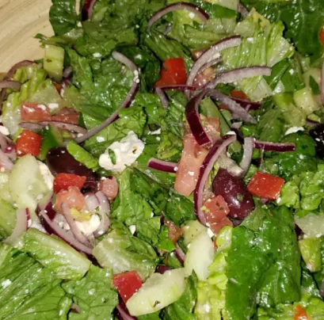

Greek Salad
Description
This Greek salad recipe is incredibly good! It's nice and tangy and even better in the summer when you use fresh vegetables.
(recipes taken from allrecipes.com)
Ingredients
- 1 head romaine lettuce- rinsed, dried and chopped
- 1 cucumber, sliced
- 2 large tomatoes, chopped
- 1 (6 ounce) can pitted black olives
- 1 green bell pepper, chopped
- 1 red bell pepper, chopped
- 1 red onion, thinly sliced
- 1 cup crumbled feta cheese
- 6 tablespoons olive oil
- 1 lemon, juiced
- 1 teaspoon dried oregano
- ground black pepper to taste
Steps
'- Combine romaine, cucumber, tomatoes, olives, bell peppers, and red onion in a large bowl; sprinkle with feta cheese.
- Whisk olive oil, lemon juice, oregano, and black pepper together in a small bowl. Pour dressing over salad, toss well to combine, and serve. for 15 minutes before serving.